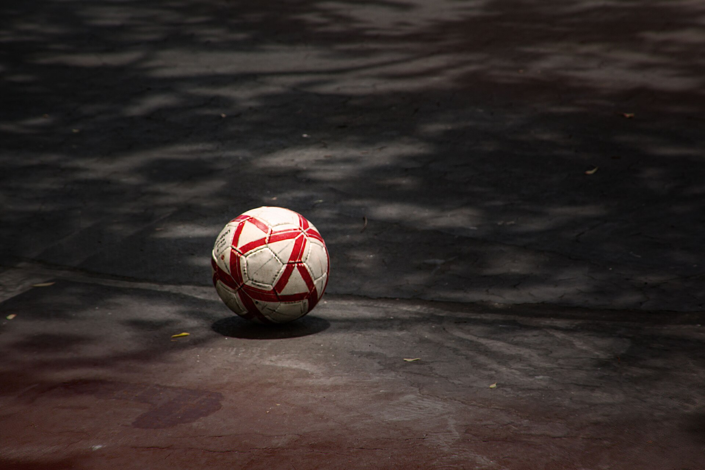

De jeugdopleiding, digitaal op orde.
Trainingen die passen bij je team, binnen de speelstijl van je club.
Voor trainers, coördinatoren en de technische commissie. Heb je al een uitnodiging? Inloggen.
Uit de Cluppie-bibliotheek, voor O9 tot en met O13

Voor de wedstrijd al kwijt
Veel waardevolle informatie over een team verdwijnt tussen seizoenen, tussen trainers, of gewoon in iemands hoofd.
- Losse appjes en briefjes
- Speeltijd, opstellingen en observaties staan verspreid over WhatsApp, Excel en geheugen.
- Speeltijd op gevoel
- Zonder overzicht is eerlijke speeltijd lastig te bewaken, wedstrijd na wedstrijd.
- Kennis die verdwijnt
- Een nieuwe trainer begint weer bij nul: inzicht in een speler gaat niet mee over.
Niet nog een app
De praktijk van ons beleidsplan. Cluppie is geen los technisch hulpmiddel: het is de dagelijkse vertaling van hoe jouw club wil opleiden.
De club bepaalt hoe er gespeeld wordt. De trainer houdt zijn eigen manier van coachen.
Structuur
Vaste, korte momenten na elke wedstrijd: reflectie wordt een gewoonte, geen uitzondering.
Ontwikkeling
Groeicurves over meerdere wedstrijden maken de voortgang van een team concreet en bespreekbaar.
Plezier
Snel te gebruiken, geen zware administratie: energie blijft bij het team, niet bij het systeem.
Continuïteit
Kennis over een speler blijft behouden, ook als de trainer wisselt van seizoen naar seizoen.
Van evaluatie naar een training die past
Cluppie denkt mee over de training van vanavond, niet alleen over wat er vorige week gebeurde.
bijna 170 eigen oefenvormen voor O6 tot en met O19, met tekening, coachpunten, een makkelijkere en een moeilijkere versie.
Dierentuin: dribbel als een dier
Spelenderwijs opwarmen met de bal aan de voet en leren luisteren naar een signaal.
- Leeftijd
- O6 tot en met O8
- Spelers
- 4 tot 14
- Vak
- 20 × 20 m
- Ronde
- 3 minuten
- Complimenteer elke speler minstens één keer bij naam.
- Doe zelf mee en laat het voor: kinderen kopiëren wat ze zien.
- Makkelijker
- Roep alleen langzame dieren.
- Moeilijker
- Dribbel met alleen je zwakke voet.
Iedereen erbij: 4 tegen 4
Samenspelen: iedereen doet mee en een goal is een teamprestatie.
- Leeftijd
- O8 tot en met O13
- Spelers
- 8 tot 9
- Vak
- 20 × 25 m
- Ronde
- 4 minuten
- Zoek samen een teamgenoot die nog niet heeft aangeraakt.
- Plezier maken is net zo belangrijk als scoren.
- Makkelijker
- Drie aanrakingen voor een doelpunt.
- Moeilijker
- Een doelpunt moet binnen 20 seconden.
Overlap op de vleugel met voorzet
Met een overlappende speler over de vleugel een voorzet geven en met drie spitsen afronden.
- Leeftijd
- O13 tot en met O19
- Spelers
- 8 tot 9
- Vak
- 30 × 38 m
- Ronde
- 5 minuten
- Back: loop snel en met vaart langs.
- Spitsen: bezet eerste paal, penaltystip en tweede paal.
- Makkelijker
- Twee verdedigers.
- Moeilijker
- Vier verdedigers.
Nieuw in Cluppie
Training maken in een paar tikken
Een training van maximaal vier vormen, uit bijna 170 eigen oefenvormen voor O6 tot en met O19. Met tekening, coachpunten, een makkelijkere en een moeilijkere versie.
Past bij jouw praktijk
Weinig spelers, weinig materiaal, een half veld of regen? De planner houdt er rekening mee en maakt een plan B. Geen verplichte instellingen: zonder keuze werkt alles meteen.
Seizoensplan voor de hele club
De hoofd jeugdopleiding legt de lijn voor het hele seizoen vast en zet de trainingen met één tik klaar bij alle teams van een bouw of de club.
Jullie werkwijze
Kies hoe de club werkt: bij “Club stuurt” maken coördinatoren de trainingen en het seizoensplan en ontvangen trainers ze, bij “Trainers vrij” doet iedere trainer dat zelf. Per team is een uitzondering mogelijk.
Ook als trainer alleen te starten
Je club doet nog niet mee? Begin met je eigen team en gebruik alle onderdelen zelf. Sluit je club zich later aan, dan kan je team worden gekoppeld.
De speelstijl van je club
Met een korte vragenlijst leggen tot vijf mensen vast hoe jullie willen voetballen. Je ziet waar jullie het eens zijn en waar het gesprek nog nodig is.
Jouw eigen coachmodel
Ontdek hoe je zelf coacht en probeer elke week één accent. Drie tikken na de training, alleen voor jou zichtbaar. De club ziet niets dat jij niet deelt.
Ook op de laptop
Naast de telefoonversie voor langs het veld is er een weergave voor de laptop, met spelerskaarten, een kalender en overzicht per bouw.
Klik zelf door de app
Dit is de echte Cluppie, met een verzonnen club: cluppie.io. Acht teams, een poule met uitslagen, trainingen en evaluaties.
- Als trainerVan O11-2 en O13-1: opstelling, wedstrijdvoorbereiding, evaluatie, de poule.
- Als bouwcoördinatorOpen de onderbouw vanaf het startscherm, en open de onderbouw, met uitslagen, teams en uitleningen.
- Als clubbeheerder en trainingscoördinatorHet clubdashboard, het seizoensplan en het weekrooster.
Je kunt alles proberen. Er wordt niets bewaard: na verversen begint de demo opnieuw.
Eén cirkel, elke week opnieuw
Het jeugdbeleidsplan bepaalt de inhoud. Cluppie zorgt dat die inhoud dagelijks wordt toegepast.
Teamevaluatie O11-2
- Balbezit
- Samenwerking
- Verdedigen
Acht korte vragen, in drie tot vijf minuten na de wedstrijd.
Groeicurve O11-2
Samenspel Druk zetten
Voorgesteld thema: Storen en veroveren
Training dinsdag O11-2
Teamjacht 4 tegen 4: verover binnen 5 seconden
Een zaterdag met Cluppie
Trainer Mark van O11-2 fluit het laatste fluitsignaal. Voor de kleedkamer opent hij Cluppie en tikt in dertig seconden de teamevaluatie in: balbezit, samenwerking, verdedigen.
TeambeoordelingIn de Stats-tab ziet Mark dat samenspel drie wedstrijden op rij stijgt, precies wat hij op training had geoefend. Druk zetten blijft wat achter. Cluppie stelt een bijpassend trainingsthema voor.
Groeicurve en suggestieOp training pakt Mark het thema op. Aan het eind van het seizoen laat hij, samen met de coördinator, een groeicurve zien die het hele seizoen bestrijkt, opgebouwd uit tientallen kleine observaties.
Training en seizoensbeeld
Alles wat Cluppie kan, op een rij
Van de eerste keer inloggen tot het clubbrede evaluatieoverzicht: dit is de volledige gereedschapskist.
Elke functie is gebouwd om trainers tijd te besparen of inzicht te geven, nooit om extra werk toe te voegen.
- Opstelling en wedstrijdvoering
- Per kwart of helft een opstelling maken, wissels slepen en automatisch de speeltijd zien.
- Teambeoordeling na wedstrijden
- In enkele tikken een teamevaluatie invullen, verdeeld over de leercurve-thema’s van de club.
- Inzicht in groei
- Groeicurves en trends laten zien hoe een team zich ontwikkelt, over wedstrijden en seizoenen heen.
- Aandachtspunten per team
- Op basis van evaluaties automatisch passende trainingsthema’s voorgesteld krijgen.
- Trainingsplanning
- Trainingen en aanwezigheid bijhouden, gekoppeld aan de ontwikkeldoelen van het team.
- Kompas
- Elke week een tip uit het jeugdbeleidsplan, passend bij team en moment in het seizoen.
- Overzicht voor coördinatoren
- Een clubbreed beeld van alle teams: gericht sturen in plaats van achteraf ontdekken.
- Spelersprofielen
- Per speler een doorlopend beeld van speeltijd, ontwikkeling en aanwezigheid.
- Eén plek voor communicatie
- Geen losse appjes en Excel-bestanden meer: iedereen kijkt naar dezelfde, actuele informatie.
Gebouwd voor iedereen in de opleiding.
- Trainer
- Het dagelijkse gereedschap: opstelling, wissels, evaluatie en trainingen.
- Coördinator
- Overzicht over meerdere teams: waar is aandacht of ondersteuning nodig.
- TC en bestuur
- Zicht op hoe de opleidingslijn in de praktijk landt, seizoen na seizoen.
- Spelers
- Eerlijkere speeltijd en trainingen die aansluiten op wat ze nodig hebben.
- Opstelling maken door spelers te slepen of te tikken, per kwart of helft
- Wissels automatisch gelogd met tijdstip zodra de klok loopt
- Speeltijd-stippen per periode, zodat direct zichtbaar is wie aan de beurt is
- Klok en aantal periodes automatisch ingesteld op de KNVB-categorie
- Doelpunten en kaarten registreren, corrigeren en terugzien in het log
- Aanvoerder aanwijzen per wedstrijd, met overzicht van rotatie
- Toernooimodus met doorlopende wissels en speeltijd over meerdere wedstrijden
- Vorige confrontatie: uitslag en notities tegen dezelfde tegenstander direct terugzien
- Format en formatie aanpassen (4×4 t/m 11×11) via “Wijzig opzet”
- Spelersbeoordeling op vijf ontwikkeldomeinen: technisch, tactisch, fysiek, mentaal, gedrag
- Snelle beoordeling in een paar tikken, of een volledige periodieke meting
- Leerpunten per speler, leeftijdsgebonden en afvinkbaar zodra ze beheerst zijn
- Teamevaluatie in acht korte vragen, in drie tot vijf minuten na de wedstrijd
- Groeicurve per team en categorieën met trend over de laatste wedstrijden
- Automatische signalering van terugkerende aandachtspunten
- Voorgesteld trainingsthema, aansluitend bij het jeugdbeleidsplan
- Seizoensstatistieken: speeltijd, doelpunten, aanvoerdersbeurten, kaarten
- Training maken uit een bibliotheek van bijna 170 vormen, met tekening en coachpunten
- Plan B bij weinig spelers, half veld, regen of kou; houdt rekening met je materiaal
- Seizoensplan per bouw of voor de hele club, met één tik toegewezen aan de teams
- Speelstijl van de club vastleggen en je eigen coachmodel opbouwen
- Trainingen delen als PDF per team, met melding bij iets nieuws
- Video’s delen via YouTube-links, gekoppeld aan het team
- Seizoenskalender per maand, met filters op wedstrijden, speeldagen en beker
- Automatische synchronisatie van officiële wedstrijden vanuit de KNVB-kalender
- Zelf toernooien, vriendschappelijke wedstrijden of vrije dagen toevoegen
- PDF-import van teamindelingen: teams en spelers automatisch uitgelezen
- Alle teams in een keer klaarzetten uit Sportlink, in de juiste bouw
- Coaches uitnodigen en beheren per team, met persoonlijke links
- Documenten (KNVB, beleid, overig) centraal uploaden en delen per team
- Club-brede evaluatieheatmap met Excel-export voor de technische commissie
- Spelers tijdelijk uitlenen aan een ander team binnen de club, of definitief overzetten met hun geschiedenis
- Berichten naar coaches sturen, met een melding in de app tot ze gelezen zijn
- Seizoensbeheer en club-breed afgelasten van speeldagen
- Werkt offline door langs de lijn en synchroniseert automatisch bij verbinding
- Toe te voegen aan het beginscherm: voelt als een echte app, geen browser nodig
- Inloggen met Google of e-mail, geen installatie nodig
- Ingebouwde handleiding met zoekfunctie, altijd binnen handbereik
- Standaard alleen voornamen zichtbaar in de app
- Achternamen blijven binnen het eigen team, alleen zichtbaar voor de coaches
- Beoordelingen en leerpunten zijn coach-only: spelers en ouders zien ze niet
- Bij een uitlening ziet de ontvangende coach alleen voornaam en voorletter
- Meer lijn in de opleiding
- Elk team werkt vanuit dezelfde structuur en thema’s uit het jeugdbeleidsplan.
- Betere begeleiding
- Trainers werken met actuele informatie in plaats van geheugen.
- Meer inzicht voor coördinatoren
- Eén doorlopend, clubbreed beeld van de opleiding.
- Minder losse informatie
- Eén centrale plek in plaats van verspreide appjes en bestanden.
- Betere ondersteuning van trainers
- Juist de vrijwilligers die het meest geven, worden ontlast.
- Professionaliteit zonder poespas
- Gebouwd voor de dagelijkse praktijk van de jeugdopleiding, en meegroeiend met de club.
Word early adopter
Cluppie zit in de opstartfase. Clubs en trainers die nu instappen, gebruiken Cluppie een half jaar gratis. We bouwen Cluppie samen met trainers en jeugdopleidingen en horen graag wat beter kan: probeer het met een of twee teams en vertel ons wat je ervan vindt.
Jeugdcoördinator of bestuurslid
Meld de club aan. Na goedkeuring ben jij clubbeheerder en zet je in ongeveer een kwartier alle teams klaar, rechtstreeks uit Sportlink.
- Club aanmelden. Vul het formulier in en kies hoe jullie jeugdopleiding werkt. Met de Sportlink Client ID van je club vullen we naam, plaats, logo en kleur voor je in.
- Teams en coaches. Zet alle teams in een keer klaar en nodig de coaches uit met een persoonlijke link.
- Eerste training. Maak een training en vul na de eerstvolgende wedstrijd de teamevaluatie in. De rest ontdek je vanzelf.
Trainer
Je club doet nog niet mee? Begin gewoon met je eigen team: log in, kies “Begin met mijn eigen team” en alle onderdelen staan open. Sluit je club zich later aan, dan kan je team worden gekoppeld. Of stuur deze pagina door naar je jeugdcoördinator.
Begin met je eigen teamAl uitgenodigd?
Heb je een persoonlijke link van je club gekregen? Open hem, log in met Google of e-mail en je zit binnen.
Inloggen- Alles in de EU opgeslagen
- Achternamen blijven in het eigen team
- Geen spelersnamen in AI
- Werkt ook zonder AI